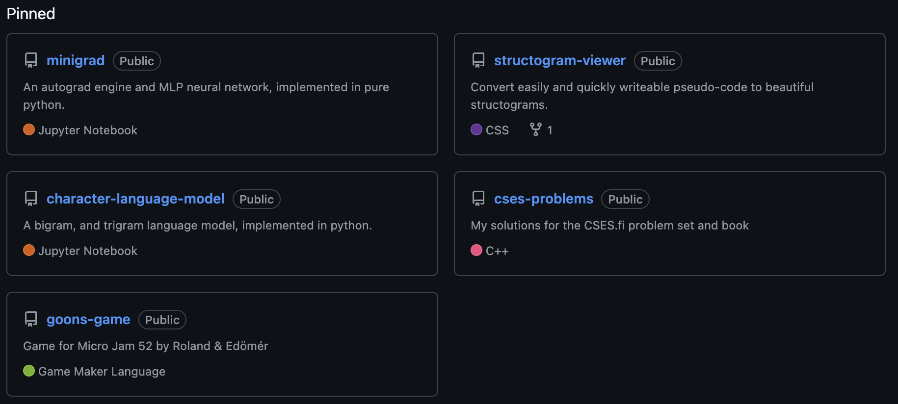
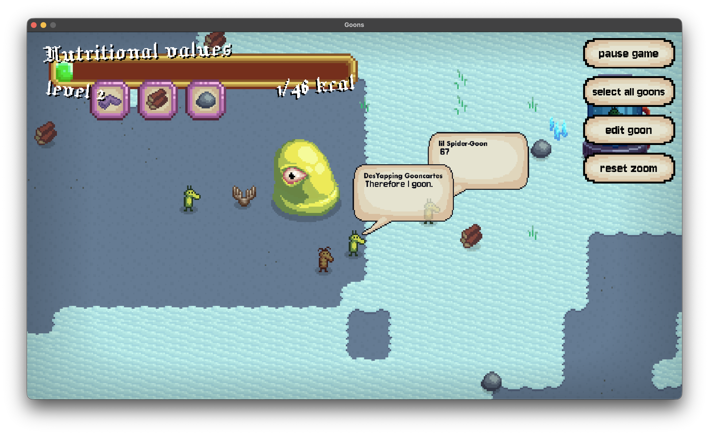
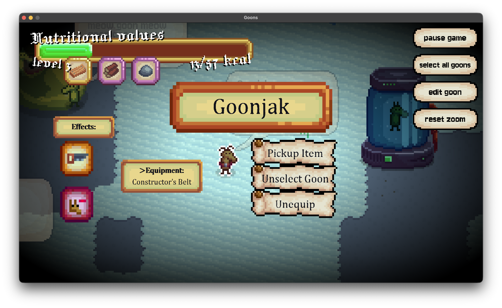
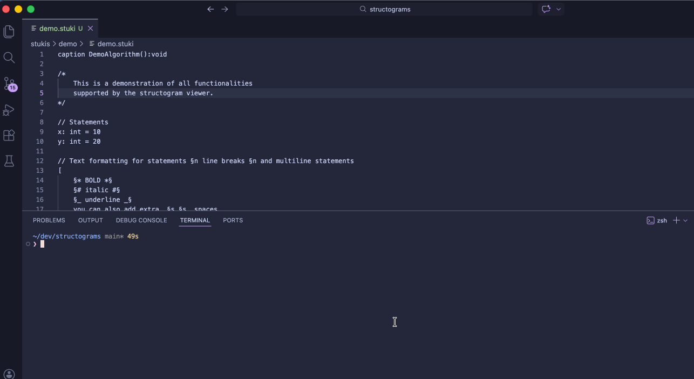
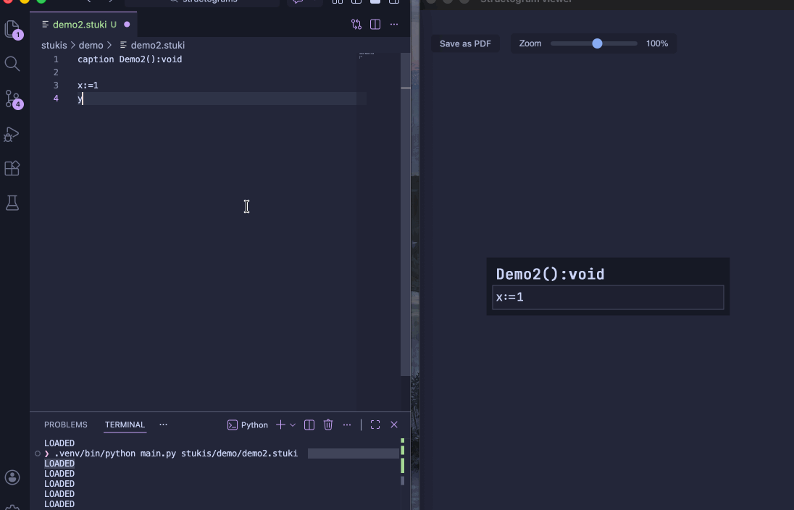

# Where to find them
Most of my projects are available on my github

# Minigrad
pythonThis is an automatic gradient descent engine I've made in pure python.
It works by noting down every calculation that happens between the parameters, then when we finally calculate the loss function, it goes back on the calculations, and by using the chain rule of calculus, it gets the gradient of every parameter (weight) in respect to the loss function.
This, being done in pure python, is obviously not very efficient, but I've learned a lot from this project.
# Goons game
GameMaker studio goon
Its about goon, its about gooner, we stay goony, we goououer, put in the goons, put in the gour and take what's gours...
- Dwayne the Goon Johnson
This is a game currenty under development by me and my friend Roland.
It was originally made for a game jam, but then we just continued working on it. It's been in development since January 2026.

We plan on releasing it on Steam in the summer, so be ready gooners

# Structogram viewer
python html/js/cssI was trying to find simple, fast, and good looking structogram viewers for my Algorithms and Data structures class, but I did not like any them. Thus, I created my own.
To use it, you need to create a .stuki file that you will be writing pseudo code in,
then call the python script with this file as it's argument.
It then takes this file, and displays a structogram such as this:

And every time you update the file, the viewer updates automatically:

# Character-level language model
python pytorchA bigram, and trigram language model implemented in python.
They were implemented with the help of the pytorch engine, since it is so much faster than my own (since it is written mainly in c/c++, duhh).
I also want to implement a n-gram model, and I've started working on it, but it is on hold currently until I mostly finish my exam period.
# Competitive programming
c++During my winter break, I've started trying to improve my problem solving and algorithm creating skills by doing the CSES problem set. It's a collection of algorithmic programming problems. I want to complete them all, then go on to leetcode/codeforces (well, I will probably start doing those during this, but still)
I'm using c++ to solve these problems, and I've solved, as of writing this, 56/400 problems. Most are quite challenging, but I'm enjoying them. Well, until a problem fucks me over for a few days, but the feeling of immense relief and joy when completing these problems is hard to describe in words.
This project is also currently on hold until I finish my exams.
my current solutions to the cses problemset# This website
The source code for this website is also available on my github.
This website was originally made for my web development class.